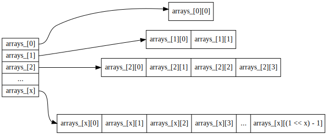

std::vector is pretty cool but it has one big problem: every once in a while, push_back has to create a whole new array and copy a bunch of elements which is O(n)! Luckily, we can do better, in terms of Big-O. The goal of this homework is to write a class that behaves like a vector but without the O(n) push_back.
Whenever we run out of space, we'll still allocate an array that's twice as big as the last one but instead of copying all the old elements to it, we'll keep all the current elements where they are and store new ones in the new array until it's full. One way to implement this is to have an std::vector of arrays. If our vector is called "v", then v[0] is an array of size 20 = 1, v[1] would be an array of size 21 = 2, v[2] would have size 22 = 4, ..., v[x] would have a size of 2x.

Before you start writing code, figure out how to take an index into our data structure and convert it to the index in v. For example, index v[0] corresponds to arrays_[0][0] and v[6] corresponds to arrays_[2][3]. Feel free to talk to anyone, especially other students, for help turning a single index in v into the 2 indices in arrays_!
#ifndef _log_n_vector_h_
#define _log_n_vector_h_
#include <cmath>
#include <memory>
#include <vector>
template <typename T>
class LogNVector {
// These member variables are suggested and not required!
// Feel free to use change the variable names or types, as long as you
// follow the spirit of the assignment.
std::vector<std::unique_ptr<T[]> > arrays_;
int size_, capacity_;
public:
LogNVector() {
// TODO
}
LogNVector(const LogNVector& other) : LogNVector() {
// TODO
}
LogNVector(std::initializer_list<T> ilist) : LogNVector() {
// TODO
}
~LogNVector() {
// TODO
}
int size() const noexcept {
// TODO
}
int capacity() const noexcept {
// TODO
}
void push_back(const T& value) {
// TODO
}
const T& operator[](int index) const {
// TODO
}
T& operator[](int index) {
// TODO
}
};
#endif // _log_n_vector_h_
#include <iostream>
#include "log_n_vector.h"
using std::cout;
using std::endl;
int main() {
LogNVector<int> v = {0, 11, 22, 33, 44, 55, 66, 77, 88, 99, 110, 121};
cout << "v[0] == " << v[0] << ", &v[0] == " << &v[0] << endl;
for (int j = 1; j < v.size(); ++j) {
// All the elements in the same array should have sequential addresses.
// For example, &v[2] == &v[1] + 1
// However, there's no guarantee that &v[1] == &v[0] + 1.
cout << "v[" << j << "] == " << v[j] << ", "
<< "&v[" << j << "] - &v[" << j - 1 << "] == "
<< &v[j] - &v[j - 1] << endl;
}
return 0;
}
$ clang++ -pedantic -Wall -std=c++20 -o example log_n_vector/manual_test.cpp $ ./example
v[0] == 0, &v[0] == 0x631eb0
v[1] == 11, &v[1] - &v[0] == 16
v[2] == 22, &v[2] - &v[1] == 1
v[3] == 33, &v[3] - &v[2] == -9
v[4] == 44, &v[4] - &v[3] == 1
v[5] == 55, &v[5] - &v[4] == 1
v[6] == 66, &v[6] - &v[5] == 1
v[7] == 77, &v[7] - &v[6] == 33
v[8] == 88, &v[8] - &v[7] == 1
v[9] == 99, &v[9] - &v[8] == 1
v[10] == 110, &v[10] - &v[9] == 1
v[11] == 121, &v[11] - &v[10] == 1
Please submit you code at gradeoven.com/courses/CS 2C/assignments/02. LogN Vector
The goal of this part of the assignment is to practice your skills as an engineer: think about how your code should perform in theory, check how it performs in reality, and document what you find.
You're going to write a short PDF report about your code. The exact format is up to you!
Here's what I'd like you to think about when writing your report:
LogNVector methods?LogNVector?LogNVector methods compare to the equivalent methods in std::vector and std::list?LogNVector, std::vector, and std::list)?You are welcome to talk about this part of the assignment with your classmates as long as you don't share log_n_vector.h code. If your conclusions are different than theirs, I'd love to hear about it.
Submit your report as a PDF on Canvas. If you have any supporting documents/code/etc., submit them as well.